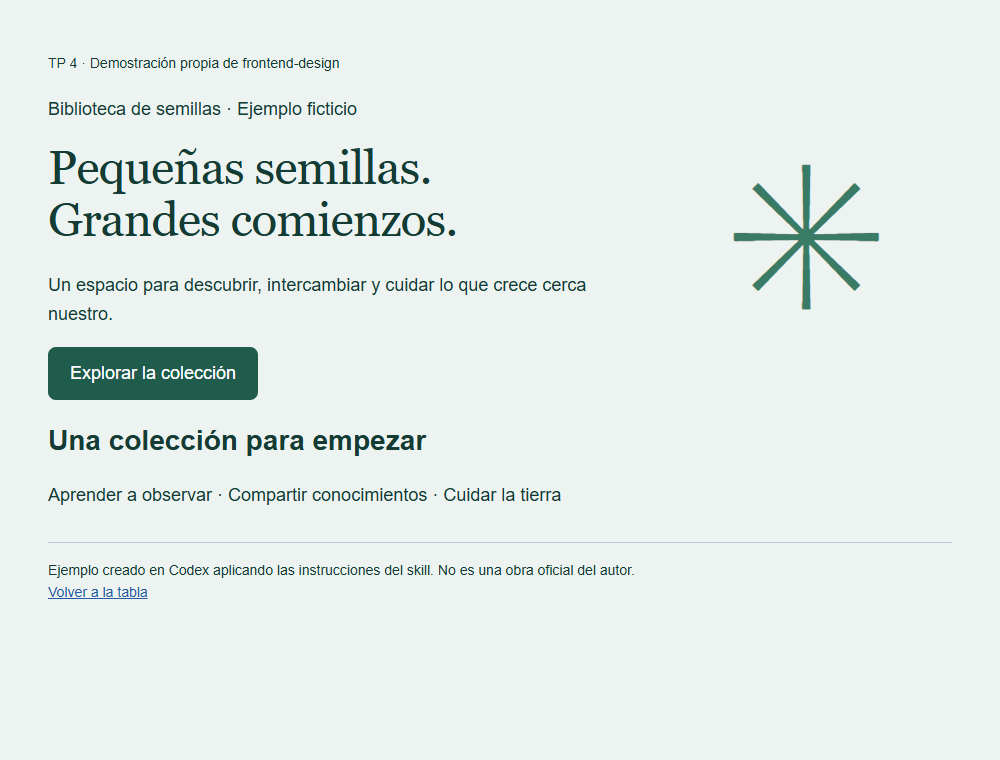
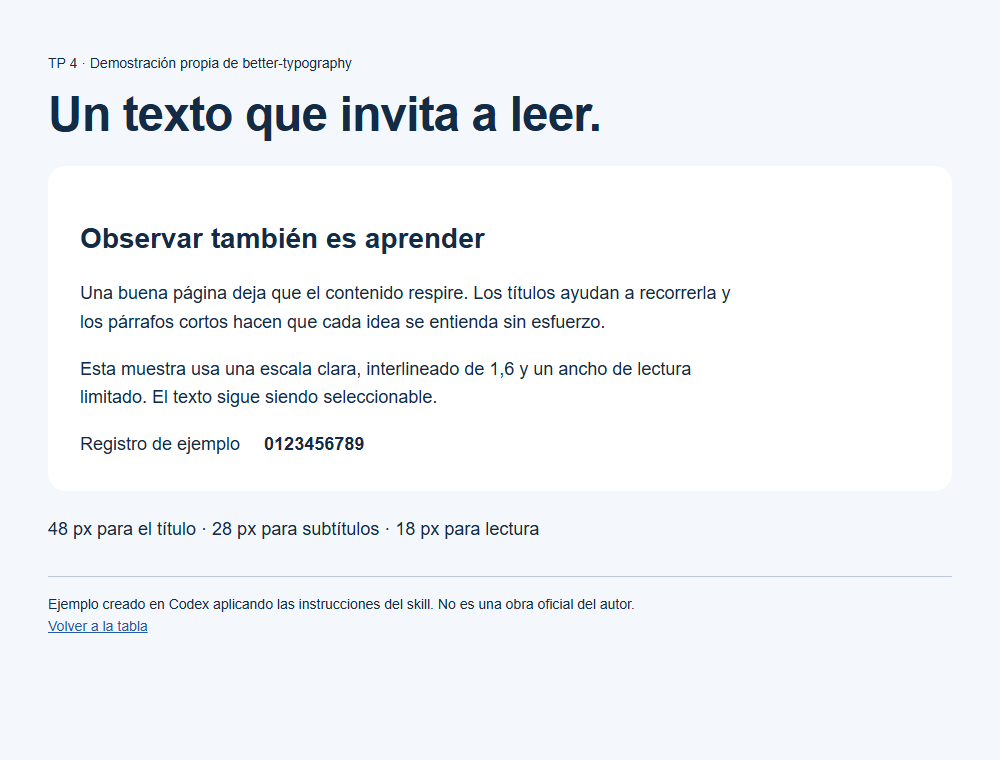
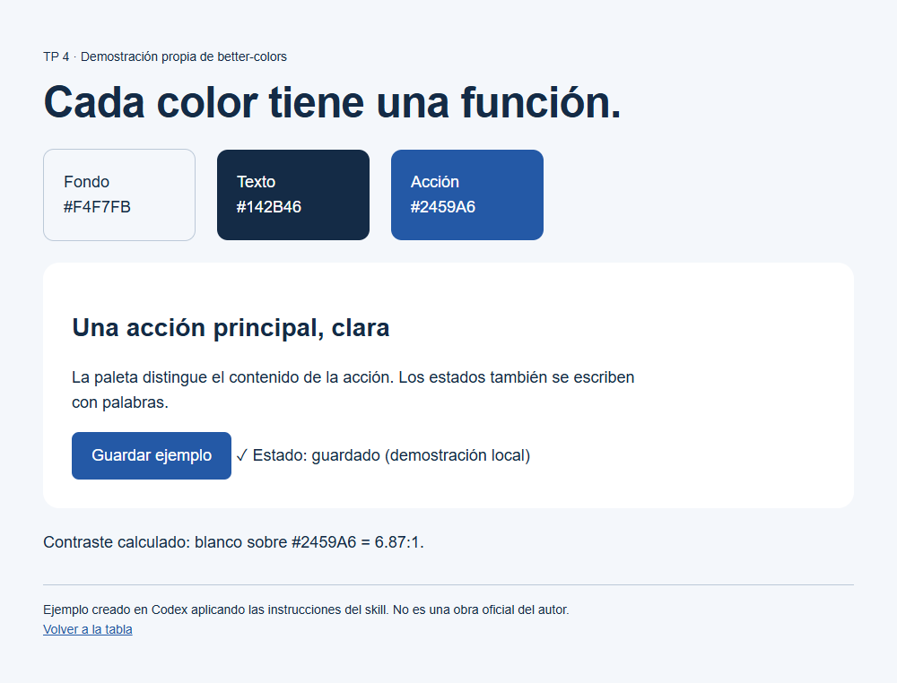
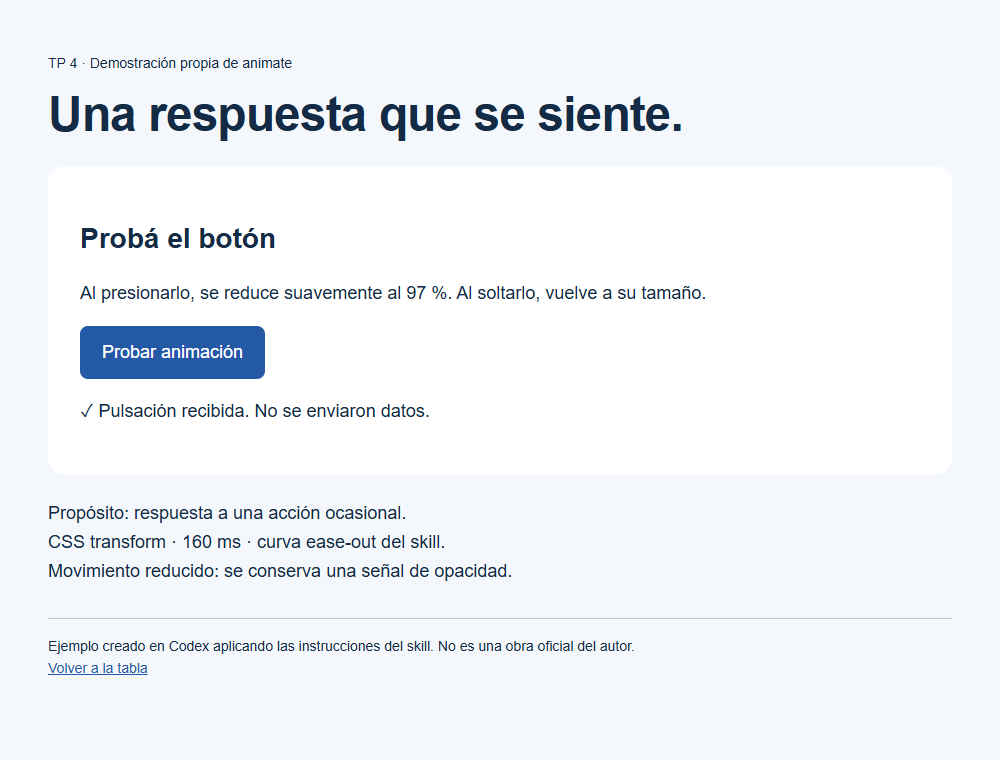
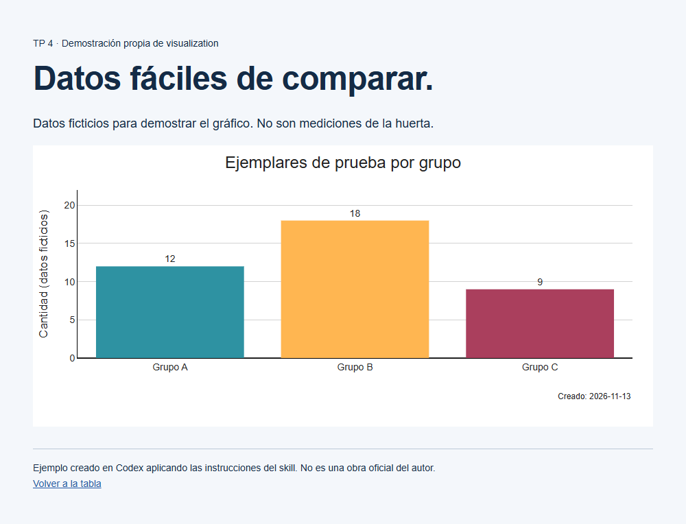

Diseño web
frontend-design | anthropics/skills
Leer SKILL.md revisado
Actualizado: 2026-09-03 | Define una identidad visual coherente para una página: composición, tipografía y jerarquía. Ayuda a diseñar para el tema del proyecto en lugar de repetir una plantilla genérica. | 
Abrir ejemplo |
Fuentes y tipografía
better-typography | jakubkrehel/skills
Leer SKILL.md revisado
Actualizado: 2026-10-24 | Ordena tamaños, pesos, interlineado y ancho de los textos para facilitar la lectura. Revisa títulos, saltos de línea y números que cambian. | 
Abrir ejemplo |
Colores y paletas
better-colors | jakubkrehel/skills
Leer SKILL.md revisado
Actualizado: 2026-10-24 | Organiza la paleta según funciones, como fondo, texto y acción principal. Mide el contraste y evita que un color sea la única señal de un estado. | 
Abrir ejemplo |
Animaciones
animate | emilkowalski/skills
Leer SKILL.md revisado
Actualizado: 2026-11-02 | Decide cuándo una animación ayuda y cómo implementarla con tiempos y curvas concretos. Prioriza movimientos breves y alternativas para quienes prefieren menos movimiento. | 
Abrir ejemplo |
Gráficos
visualization | atlassian-labs/data-visualization-skill
Leer SKILL.md revisado
Actualizado: 2026-10-26 | Crea gráficos con Plotly, colores consistentes, etiquetas claras y poco adorno. Ayuda a elegir el tipo de gráfico y permite exportarlo como HTML interactivo. | 
Abrir ejemplo |